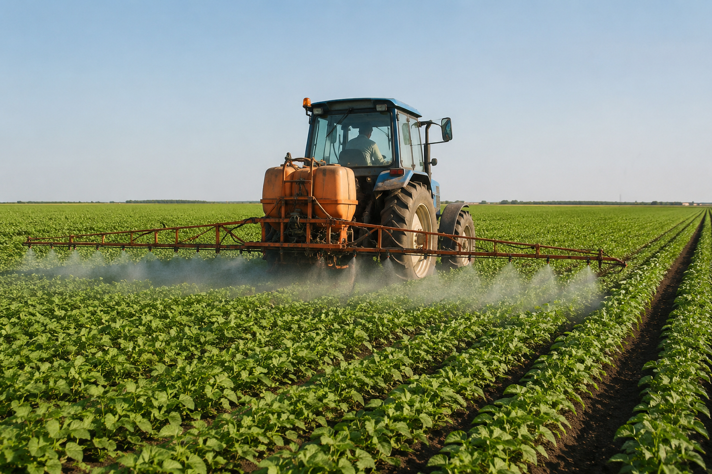

O que é a produção convencional?
A produção convencional é um modelo agrícola amplamente utilizado no mundo, caracterizado pelo uso de máquinas, fertilizantes químicos e defensivos agrícolas para aumentar a produtividade das lavouras.
Esse tipo de produção permite o cultivo em larga escala, garantindo o abastecimento de alimentos para a população. No entanto, o uso intensivo desses recursos pode gerar impactos ambientais, como a contaminação do solo, da água e a redução da biodiversidade.
Atualmente, muitas práticas convencionais vêm sendo adaptadas para se tornarem mais sustentáveis, buscando reduzir impactos e melhorar a eficiência no uso dos recursos naturais.
O desafio está em encontrar um equilíbrio entre alta produção e preservação ambiental, garantindo um futuro sustentável para as próximas gerações.
💡 Você sabia? O uso intensivo de defensivos agrícolas pode afetar o solo e a água, por isso novas práticas vêm sendo desenvolvidas para tornar a produção mais sustentável.